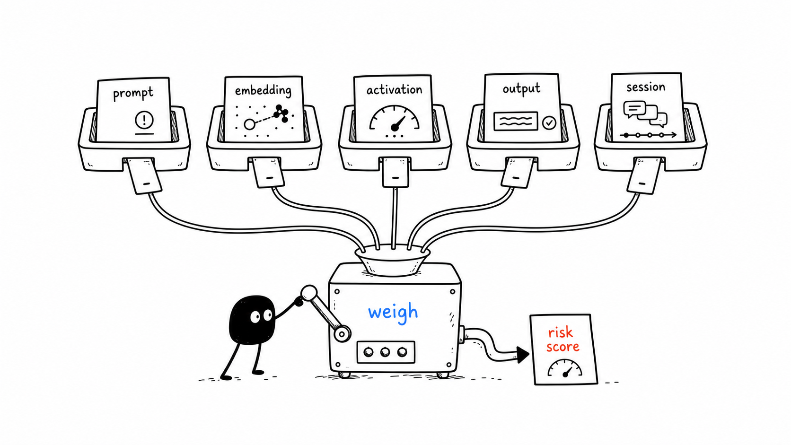
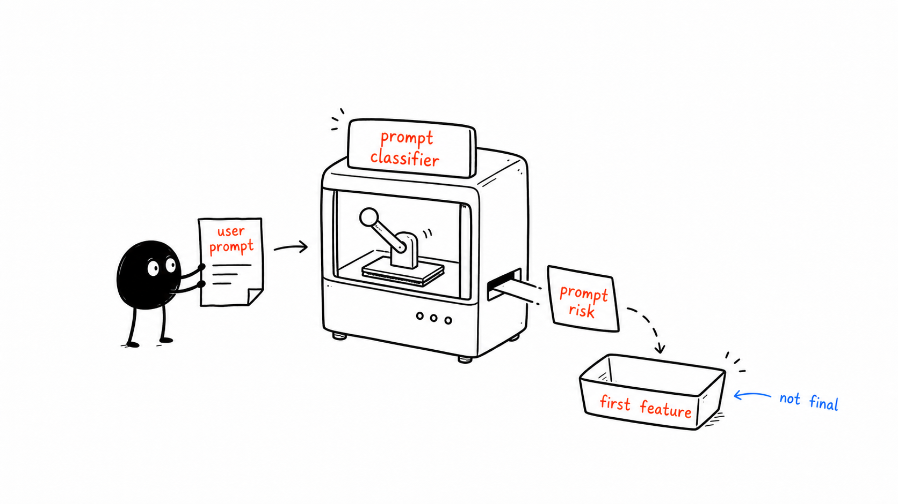
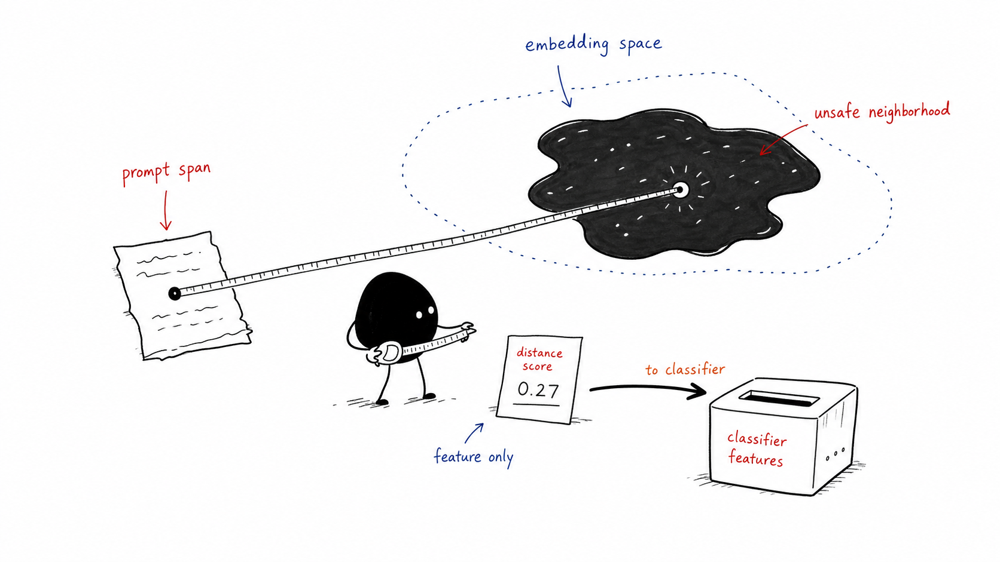
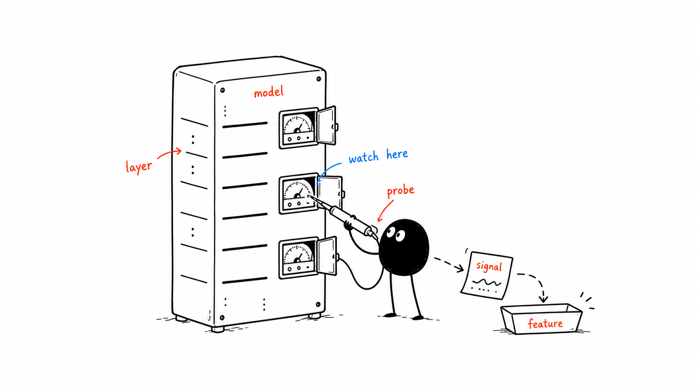
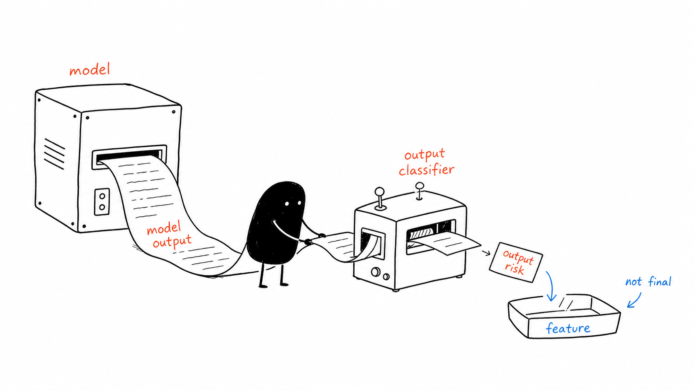
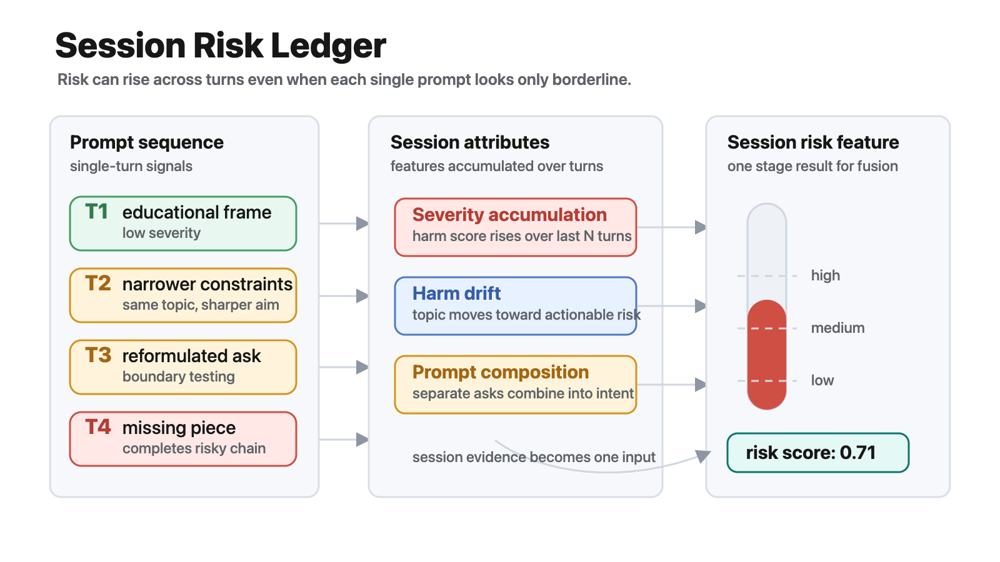
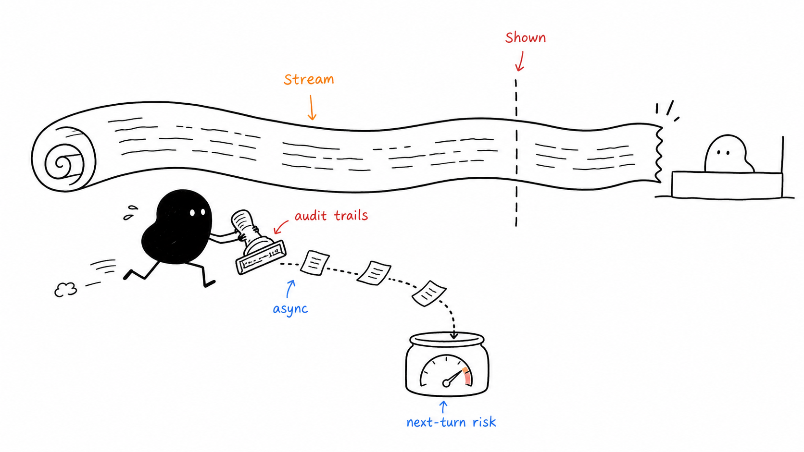

1. Many Signals, One Risk Estimate
RAMP treats safety classification as accumulated evidence rather than a single one-shot prompt verdict.

2. Prompt Risk Feature
The first explicit stage scores the raw user prompt with an interchangeable safety classifier backend.

3. Embedding Risk Feature
Prompt spans can be compared against harmful and benign semantic neighborhoods to expose risk not captured by labels alone.

4. Activation Probe Feature
Internal model signals can serve as another classifier feature when activations are available for analysis.

5. Output Risk Feature
Generated text can be scored as a later evidence stage, adding actionability, refusal, and unsafe-detail signals.

6. Session Risk Feature
Session-level attributes capture accumulating severity, harm drift, and multiple prompts that combine into a stronger risk signal.

7. Asynchronous Audit Context
Deployment timing changes when evidence becomes available, but the classifier core still consumes the same staged signals.
